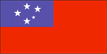
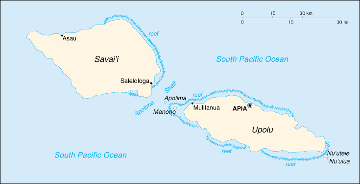

{kind=link}


| Samoa |  |
|
|  | |
| Introduction |
Background: New Zealand occupied the German protectorate of Western Samoa at the outbreak of World War I in 1914. It continued to administer the islands as a mandate and then as a trust territory until 1962, when the islands became the first Polynesian nation to reestablish independence in the 20th century. The country dropped the "Western" from its name in 1997.
| Geography |
Location: Oceania, group of islands in the South Pacific Ocean, about one-half of the way from Hawaii to New Zealand
Geographic coordinates: 13 35 S, 172 20 W
Map references: Oceania
Area:
total:
2,860 sq km
land:
2,850 sq km
water:
10 sq km
Area - comparative: slightly smaller than Rhode Island
Land boundaries: 0 km
Coastline: 403 km
Maritime claims:
exclusive economic zone:
200 nm
territorial sea:
12 nm
Climate: tropical; rainy season (October to March), dry season (May to October)
Terrain: narrow coastal plain with volcanic, rocky, rugged mountains in interior
Elevation extremes:
lowest point:
Pacific Ocean 0 m
highest point:
Mauga Silisili 1,857 m
Natural resources: hardwood forests, fish, hydropower
Land use:
arable land:
19%
permanent crops:
24%
permanent pastures:
0%
forests and woodland:
47%
other:
10%
Irrigated land: NA sq km
Natural hazards: occasional typhoons; active volcanism
Environment - current issues: soil erosion
Environment - international agreements:
party to:
Biodiversity, Climate Change, Desertification, Law of the Sea, Nuclear Test Ban, Ozone Layer Protection
signed, but not ratified:
Climate Change-Kyoto Protocol
| People |
Population: 179,466 (July 2000 est.)
Age structure:
0-14 years:
33% (male 30,288; female 29,323)
15-64 years:
61% (male 69,566; female 40,402)
65 years and over:
6% (male 4,623; female 5,264) (2000 est.)
Population growth rate: -0.22% (2000 est.)
Birth rate: 15.59 births/1,000 population (2000 est.)
Death rate: 6.24 deaths/1,000 population (2000 est.)
Net migration rate: -11.59 migrant(s)/1,000 population (2000 est.)
Sex ratio:
at birth:
1.05 male(s)/female
under 15 years:
1.03 male(s)/female
15-64 years:
1.72 male(s)/female
65 years and over:
0.88 male(s)/female
total population:
1.39 male(s)/female (2000 est.)
Infant mortality rate: 32.75 deaths/1,000 live births (2000 est.)
Life expectancy at birth:
total population:
69.2 years
male:
66.48 years
female:
72.06 years (2000 est.)
Total fertility rate: 3.5 children born/woman (2000 est.)
Nationality:
noun:
Samoan(s)
adjective:
Samoan
Ethnic groups: Samoan 92.6%, Euronesians 7% (persons of European and Polynesian blood), Europeans 0.4%
Religions: Christian 99.7% (about one-half of population associated with the London Missionary Society; includes Congregational, Roman Catholic, Methodist, Latter-Day Saints, Seventh-Day Adventist)
Languages: Samoan (Polynesian), English
Literacy:
definition:
age 15 and over can read and write
total population:
97%
male:
97%
female:
97% (1971 est.)
| Government |
Country name:
conventional long form:
Independent State of Samoa
conventional short form:
Samoa
former:
Western Samoa
Data code: WS
Government type: constitutional monarchy under native chief
Capital: Apia
Administrative divisions: 11 districts; A'ana, Aiga-i-le-Tai, Atua, Fa'asaleleaga, Gaga'emauga, Gagaifomauga, Palauli, Satupa'itea, Tuamasaga, Va'a-o-Fonoti, Vaisigano
Independence: 1 January 1962 (from New Zealand-administered UN trusteeship)
National holiday: National Day, 1 June (1962)
Constitution: 1 January 1962
Legal system: based on English common law and local customs; judicial review of legislative acts with respect to fundamental rights of the citizen; has not accepted compulsory ICJ jurisdiction
Suffrage: 21 years of age; universal
Executive branch:
chief of state:
Chief Susuga MALIETOA Tanumafili II (cochief of state from 1 January 1962 until becoming sole chief of state 5 April 1963)
head of government:
Prime Minister TUILA'EPA Sailele Malielegaoi (since 24 November 1998); note - TUILA'EPA served as deputy prime minister since 1992; he assumed the prime ministership in November 1998 when former Prime Minister TOFILAU Eti Alesana resigned in poor health; the post of deputy prime minister is currently vacant
cabinet:
Cabinet consists of 12 members, appointed by the chief of state with the prime minister's advice
elections:
upon the death of Chief Susuga MALIETOA Tanumafili II, a new chief of state will be elected by the Legislative Assembly to serve a five-year term; prime minister appointed by the chief of state with the approval of the Legislative Assembly
Legislative branch:
unicameral Legislative Assembly or Fono (49 seats - 47 elected by Samoans, 2 elected by non-Samoans; only chiefs (matai) may stand for election to the Fono; members serve five-year terms)
elections:
last held 26 April 1996 (next to be held by NA April 2001)
election results:
percent of vote by party - HRPP 45.17%, SNDP 27.1%, independents 23.7%; seats by party - HRPP 25, SNDP 13, independents 11
Judicial branch: Supreme Court; Court of Appeal
Political parties and leaders: Human Rights Protection Party or HRPP [TUILA'EPA Sailele Malielegaoi, chairman]; Samoa All People's Party or SAPP [Matatumua MAIMOAGA]; Samoan National Development Party or SNDP [TAPUA Tamasese Efi, chairman] (opposition); Samoan Progressive Conservative Party [LEOTA Ituau Ale]
International organization participation: ACP, AsDB, C, ESCAP, FAO, G-77, IBRD, ICAO, ICFTU, ICRM, IDA, IFAD, IFC, IFRCS, IMF, IMO, Intelsat (nonsignatory user), IOC, ITU, OPCW, Sparteca, SPC, SPF, UN, UNCTAD, UNESCO, UPU, WHO, WIPO, WMO
Diplomatic representation in the US:
chief of mission:
Ambassador Tuiloma Neroni SLADE
chancery:
800 Second Avenue, Suite 400D, New York, NY 10017
telephone:
[1] (212) 599-6196, 6197
FAX:
[1] (212) 599-0797
Diplomatic representation from the US:
chief of mission:
Ambassador Carol MOSELEY BRAUN (Ambassador to New Zealand and Samoa, resides in Wellington, New Zealand)
embassy:
5th floor, Beach Road, Apia
mailing address:
P. O. Box 3430, Apia
telephone:
[685] 21631
FAX:
[685] 22030
Flag description: red with a blue rectangle in the upper hoist-side quadrant bearing five white five-pointed stars representing the Southern Cross constellation
| Economy |
Economy - overview: The economy of Samoa has traditionally been dependent on development aid, private family remittances from overseas, and agricultural exports. The country is vulnerable to devastating storms. Agriculture employs two-thirds of the labor force, and furnishes 90% of exports, featuring coconut cream, coconut oil, and copra. Outside of a large automotive wire harness factory, the manufacturing sector mainly processes agricultural products. Tourism is an expanding sector; more than 70,000 tourists visited the islands in 1996. The Samoan Government has called for deregulation of the financial sector, encouragement of investment, and continued fiscal discipline. Observers point to the flexibility of the labor market as a basic strength for future economic advances.
GDP: purchasing power parity - $485 million (1998 est.)
GDP - real growth rate: 1.8% (1998 est.)
GDP - per capita: purchasing power parity - $2,100 (1998 est.)
GDP - composition by sector:
agriculture:
40%
industry:
25%
services:
35% (1996 est.)
Population below poverty line: NA%
Household income or consumption by percentage share:
lowest 10%:
NA%
highest 10%:
NA%
Inflation rate (consumer prices): 2.2% (1998 est.)
Labor force: 82,500 (1991 est.)
Labor force - by occupation: agriculture 65%, services 30%, industry 5% (1995 est.)
Unemployment rate: NA%
Budget:
revenues:
$52 million
expenditures:
$99 million, including capital expenditures of $37 million (FY96/97 est.)
Industries: timber, tourism, food processing, fishing
Industrial production growth rate: 14% (1996 est.)
Electricity - production: 65 million kWh (1998)
Electricity - production by source:
fossil fuel:
61.54%
hydro:
38.46%
nuclear:
0%
other:
0% (1998)
Electricity - consumption: 60 million kWh (1998)
Electricity - exports: 0 kWh (1998)
Electricity - imports: 0 kWh (1998)
Agriculture - products: coconuts, bananas, taro, yams
Exports: $20.3 million (f.o.b., 1998)
Exports - commodities: coconut oil and cream, copra, fish, beer
Exports - partners: American Samoa, Australia, New Zealand, US, Germany
Imports: $96.6 million (f.o.b., 1998)
Imports - commodities: machinery and equipment, foodstuffs
Imports - partners: Australia, New Zealand, Japan, Fiji, US
Debt - external: $156 million (1997 est.)
Economic aid - recipient: $42.9 million (1995)
Currency: 1 tala (WS$) = 100 sene
Exchange rates: tala (WS$) per US$1 - 3.0460 (January 2000), 3.0120 (1999), 2.9429 (1998), 2.5562 (1997), 2.4618 (1996), 2.4722 (1995)
Fiscal year: calendar year
| Communications |
Telephones - main lines in use: 8,000 (1994)
Telephones - mobile cellular: 1,200 (1994)
Telephone system:
domestic:
NA
international:
satellite earth station - 1 Intelsat (Pacific Ocean)
Radio broadcast stations: AM 1, FM 3, shortwave 0 (1998)
Radios: 178,000 (1997)
Television broadcast stations: 6 (1997)
Televisions: 11,000 (1997)
Internet Service Providers (ISPs): NA
| Transportation |
Railways: 0 km
Highways:
total:
790 km
paved:
332 km
unpaved:
458 km (1996 est.)
Ports and harbors: Apia, Asau, Mulifanua, Salelologa
Airports: 3 (1999 est.)
Airports - with paved runways:
total:
1
2,438 to 3,047 m:
1 (1999 est.)
Airports - with unpaved runways:
total:
2
under 914 m:
2 (1999 est.)
| Military |
Military branches: no regular armed services; Samoa Police Force
Military expenditures - dollar figure: $NA
Military expenditures - percent of GDP: NA%
Military - note: Samoa has no formal defense structure or regular armed forces; informal defense ties exist with NZ, which is required to consider any Samoan request for assistance under the 1962 Treaty of Friendship
| Transnational Issues |
Disputes - international: none